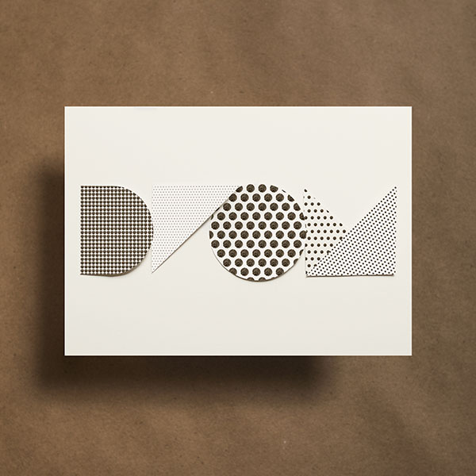
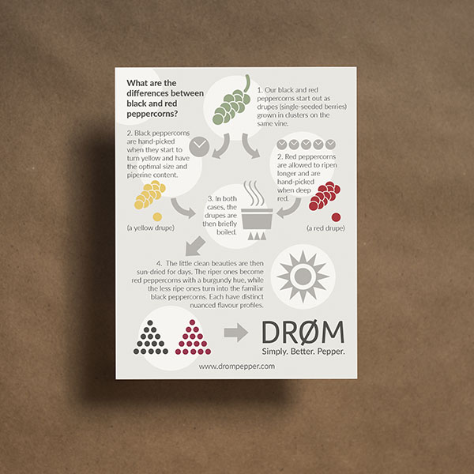
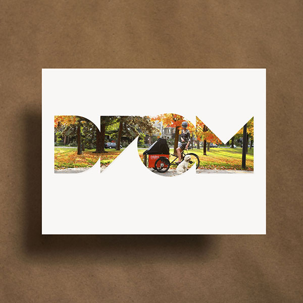
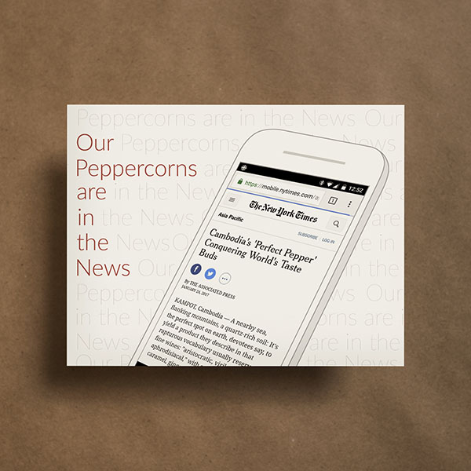
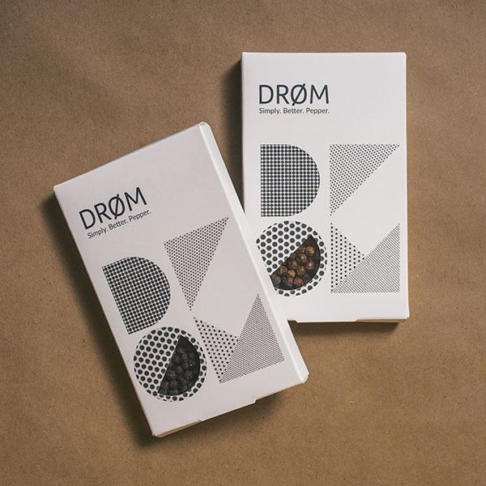
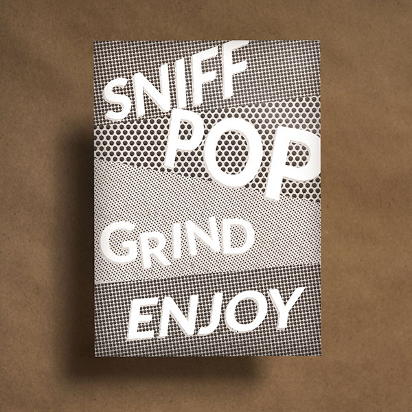

Web Design ● UX/UI ▲ Visual Design ◆ Illustration ■ Brand ● Animation ▲ Product Design ◆ Photography ■Web Design ● UX/UI ▲ Visual Design ◆ Illustration ■ Brand ● Animation ▲ Product Design ◆ Photography ■Web Design ● UX/UI ▲ Visual Design ◆ Illustration ■ Brand ● Animation ▲ Product Design ◆ Photography ■Web Design ● UX/UI ▲ Visual Design ◆ Illustration ■ Brand ● Animation ▲ Product Design ◆ Photography ■
Role
- Graphic Designer
- Illustrator
- Brand Designer

01 · Original

02 · Infographic

03 · Bike

04 · News

05 · Boxes

06 · Sniff
Back to Graphic Design